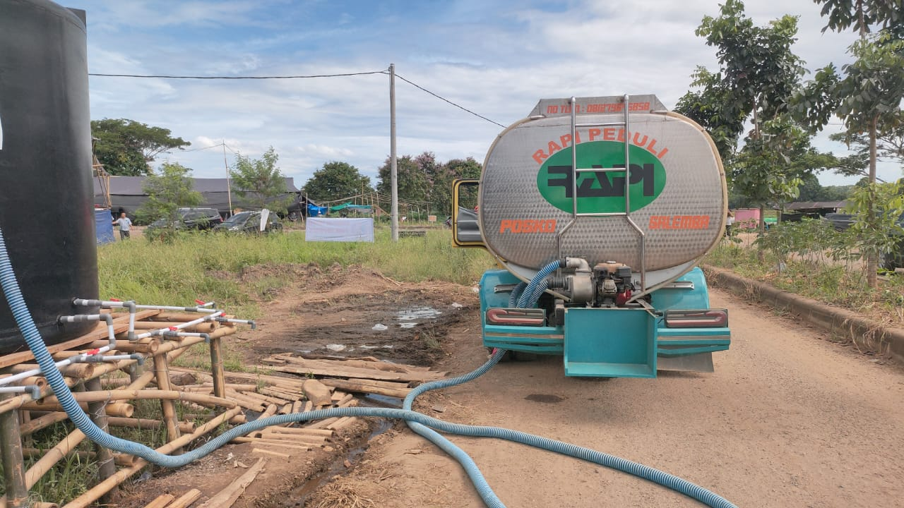
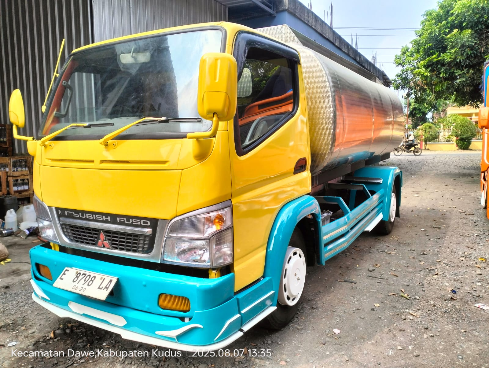
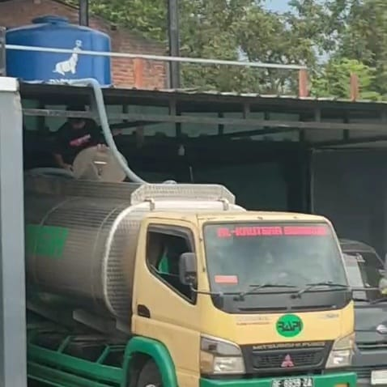
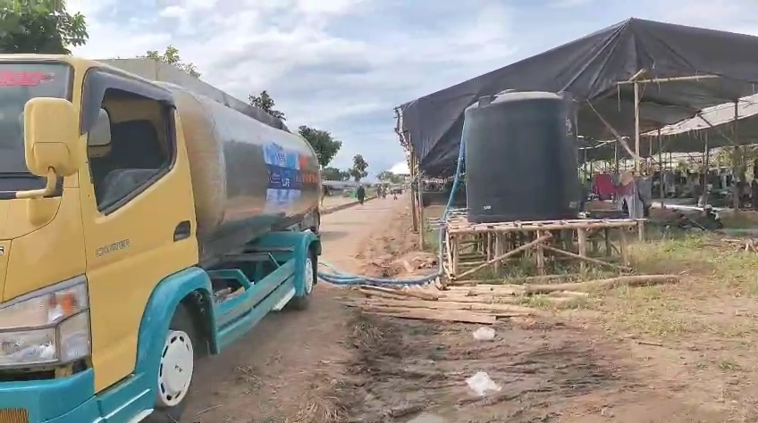
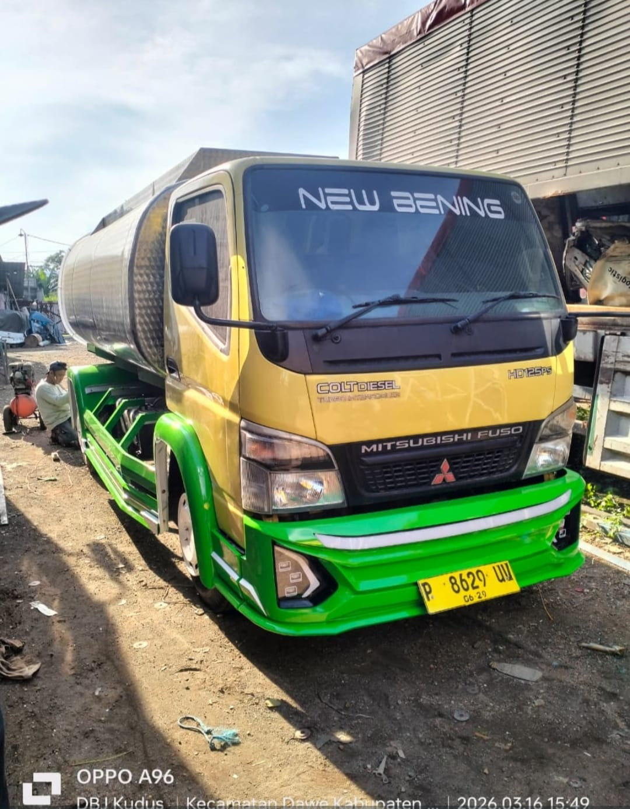
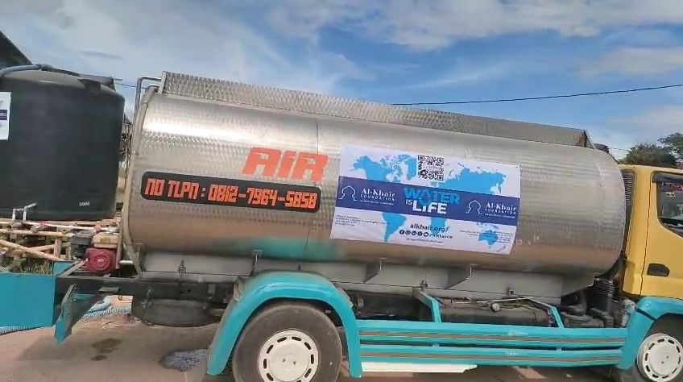
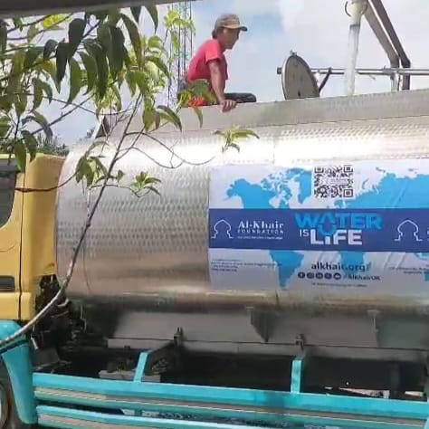
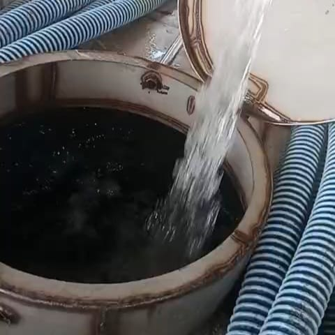

Pengiriman Air Tangki Bersih & Siap Pakai
Al-Kautsar Bumindo melayani pengiriman air bersih menggunakan armada mobil tangki higienis untuk wilayah Bandar Lampung dan sekitarnya. Solusi cepat dan praktis untuk mengatasi sumur kering, kebutuhan darurat rumah tangga, suplai bahan baku depot air minum, hingga proyek dan acara besar.
Air Bersih & Jernih Teruji
Air berasal dari sumber terpilih yang telah melewati proses penyaringan sehingga jernih, tidak berbau, dan aman digunakan.
Armada Tangki Higienis
Tangki pengangkut dirawat dan dibersihkan secara berkala untuk menjaga kemurnian air selama perjalanan.
Selang Panjang & Pompa Siap Pakai
Dilengkapi mesin pompa pendorong dan selang panjang untuk menjangkau toren atas (dak) maupun lokasi masuk gang.
Pengiriman Cepat & Tepat
Tim sopir berpengalaman yang hafal rute wilayah Lampung siap mengantarkan pesanan air langsung ke lokasi Anda.
Formulir Pemesanan Air Tangki
Lengkapi data kebutuhan air Anda di bawah ini. Biaya pengiriman menyesuaikan kapasitas liter dan jarak lokasi pengantaran.
Dokumentasi Armada & Pengiriman Air Tangki
Bukti nyata aktivitas pengisian dan pengantaran air bersih Al-Kautsar Bumindo ke berbagai lokasi pelanggan di Lampung.







